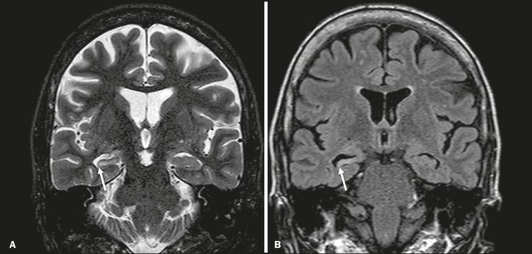

Lobo temporal: aura epigástrica, automatismos e hipocampo
Esfregar as duas mãos na crise prova atividade epiléptica bilateral?
Não. A principal síndrome epiléptica do adulto é a do lobo temporal — crise focal com perda de consciência, aura epigástrica e automatismos de mãos. O bilaterismo do gesto vem do foco de comportamento, não de uma tempestade motora generalizada.
ELT no adulto
A principal síndrome epiléptica no adulto é a epilepsia do lobo temporal. Apresentação: crises focais com perda de consciência.
Esclerose mesial
A grande causa é a esclerose mesial temporal / esclerose hipocampal (mesial = região medial do lobo temporal; o hipocampo é a estrutura-chave). Em prova: “esclerose do hipocampo” ou “esclerose mesial temporal”. A região integra circuitos de comportamento → a crise tem forte componente comportamental.
Herói · do epigástrio ao hipocampo — use Rodar etapas (ou Anterior/Próximo) para percorrer aura → hipocampo atrofiado → automatismos. O cueing do hipocampo some quando você interage. As duas mãos em automatismo não são tempestade bilateral.
Aura e automatismos
Quadro rico: a aura clássica é o desconforto epigástrico / vazio na barriga → perda de consciência. Pode ficar “estátua” rígida 1–2 min e recuperar aos poucos; ou vir automatismos manuais: esfregar mãos, girar braços, cruzar braços, bater palma, ajeitar roupa, movimentos orais mastigatórios. Comportamentos extremos são possíveis (despir, perambular, agredir), mas o mais frequente é perda de consciência + automatismos de mãos.
Duas mãos ≠ crise bilateral
Regra / pegadinha: automatismos bilaterais das mãosnão significam crise bilateral: a área de comportamento (focal) ordena o movimento; a área motora em si pode não estar em atividade epiléptica. Pode evoluir para TCG (focal que se generaliza).
Pegadinha de ouro · 2 mãos ≠ 2 hemisférios em crise
O gesto das duas mãos é comportamento, não tempestade motora. A ELT é focal — e pode, sim, evoluir a TCG. Não chame de generalizada pelo bilaterismo do automatismo.
RM coronal + CBZ/OXC
Diagnóstico: RM (mostra a lesão) + EEG (ponta-onda em derivações temporais). Quadro rico de imagem: a RM em corte coronal (vista “de frente”); comparam-se os hipocampos — um atrofiado/esclerosado = foco. Tratamento: escolha de crise focal — carbamazepina, oxcarbazepina.
Aura epigástrica → automatismos — o piso resume o caminho da crise temporal: do vazio na barriga ao gesto automático das mãos, sem tempestade motora bilateral.

RM coronal T2 — esclerose hipocampal esquerda: o hipocampo atrofiado (esquerdo) contra o preservado (direito). É o achado que faz a ELT ser a principal síndrome do adulto.
Uhomachinky, 2021 · CC BY-SA 4.0 · via Wikimedia Commons, File:Left_Hippocampal_Sclerosis_on_MRI.jpg · fonte
Chamar a ELT de generalizada pelos automatismos bilaterais leva à droga errada (CBZ/OXC da focal, não VPA da generalizada mioclônica) e perde a lesão que a RM mostraria.
Quiz
Conexão
Hora de testar o banco de raciocínio — rolândica e ELT primeiro, depois ausência, TCG adulto e o DDx de porta.